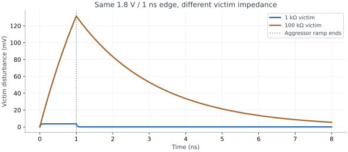

Crosstalk, Return Paths & Isolation
How digital activity becomes analog error through the physical chip.
- Estimate a coupled voltage kick and explain the role of victim impedance.
- Distinguish direct coupling from supply, return, and substrate coupling.
- Choose layout and timing mitigations with explicit assumptions.
1. A slow control signal can have a fast analog edge
A trim bit may change only once at startup, yet its transition can have a nanosecond edge. Coupling current depends on the edge, i = C·dv/dt, rather than only the repetition rate. If that edge occurs during a sensitive sample or comparator decision, a rarely switching wire can still matter. A block's “digital” label does not change the electric field around its wires.
Three paths deserve separate thought: direct capacitive coupling between nets, voltage movement through a shared supply/return impedance, and current injected through substrate or wells. ADI's crosstalk discussion explains why interference can become harmonics or signal-dependent error, not only random noise.
2. Put a number on a high-impedance glitch
Assume an aggressor steps by ΔVa, with mutual capacitance Cc to a victim having Cv to a quiet reference. If the edge is much faster than the victim's recovery and no clamp conducts, charge conservation gives:
ΔVv = [Cc/(Cv + Cc)] ΔVa
Teaching example: Cc=2 fF, Cv=20 fF and ΔVa=1.8 V produce an initial ideal-step kick of 163.6 mV. This is 9.09% of the aggressor swing even though the coupling is only 2 fF. These are assumed extracted-network values, not SKY130 per-length coefficients. The victim may later return to its original bias through its source impedance; a nearly floating node recovers slowly.
For a victim resistance R to its quiet bias and a linear aggressor ramp of duration tr, the small-signal lumped model obeys (Cv+Cc)dvv/dt + vv/R = Ccdva/dt. The peak at the end of the ramp is:
Vpeak = R Cc ΔVa/tr × [1 − e−tr/[R(Cv+Cc)]]
With a 1 ns edge, the example gives about 3.60 mV for R=1 kΩ, versus 131.5 mV for R=100 kΩ. After the ramp, it decays with time constant R(Cv+Cc). A real receiver can be nonlinear; a large kick may turn on protection devices or change transistor operating regions.

Cv=20 fF; aggressor swing=1.8 V; linear rise time=1 ns. Small-signal model, no clamps.
3. Switching direction changes a digital load
For a coupling capacitor, ic = Ccd(Vvictim−Vaggressor)/dt. If equal edges move together, their voltage difference scarcely changes. Equal opposite edges make that difference change twice as fast. The familiar “0×, 1×, 2× coupling” intuition assumes ideal alignment, equal swing/slew, and a lumped model. Real timing windows, unequal waveforms, and distributed routes require signal-integrity-aware analysis.
| Neighbor behavior | Idealized coupling contribution | Possible outcome |
|---|---|---|
| Same direction, equal aligned edge | Approximately 0× Cc | Less charge demanded from victim driver |
| Neighbor held quiet | Approximately 1× Cc | Additional effective load |
| Opposite direction, equal aligned edge | Approximately 2× Cc | More delay or worse slew |
| Victim held quiet, aggressor switches | Injected transient current | A noise pulse; size depends on victim impedance |
The OpenRCX extraction model distinguishes mutual and ground capacitance and has options that can ground small couplings. The extraction setup must preserve the couplings important to an analog victim; a timing-oriented reduction threshold may be inappropriate for a sensitive reference.
4. The ground symbol hides a return path
A schematic ground label is an intended net connection, not a promise of zero physical impedance. For an illustrative common return with 0.1 Ω resistance and 1 nH inductance, a 10 mA current adds 1 mV of resistive drop. If that current rises by 10 mA in 1 ns, the inductive term is L·di/dt = 10 mV. These terms occur with the actual current waveform and are not interchangeable DC limits. The 1 nH represents an assumed package/connection inductance, not a SKY130 metal parameter.
A receiver measures a signal relative to its local reference. A moving return can therefore corrupt both digital noise margin and analog accuracy. The principles in ADI MT-031 concern complete current loops. They do not imply that every ASIC should split its ground net: a poor split can force a larger return loop, complicate protection paths, and increase impedance. Choose supply domains, return paths, package pins, and substrate connections together.
5. Isolation is a circuit and layout problem
| Mitigation | Why it can help | What to check |
|---|---|---|
| Increase spacing / shorten parallel runs | Reduce mutual coupling | Extracted geometry and route detours |
| Shield to a quiet low-impedance reference | Intercept electric-field coupling | Shield connection impedance, added load, and reference noise |
| Reduce edge speed when allowed | Reduce finite-ramp injection current | Digital slew limits, timing, short-circuit power |
| Differential symmetry | Make disturbances more nearly common mode | Unequal coupling and finite common-mode rejection |
| Well/substrate taps, guard structures, isolation wells | Control body potential and substrate current paths | Available device options, body ties, latch-up and layout rules |
| Schedule quiet acquisition windows | Avoid known sensitive intervals | Worst activity, reset/scan modes, asynchronous events |
SKY130 documents 1.8 V NMOS devices with or without deep-n-well isolation in its device cross-sections. That option does not make arbitrary body voltages legal or guarantee a particular substrate-isolation ratio. Follow the device and well rules, then verify the relevant coupled network.
6. A shared handoff checklist
Give the layout engineer the victim's impedance and acceptable disturbance, the aggressor swing and edge rate, the sensitive time windows, and the actual reference net. A request such as “shield this analog net” leaves too much unspecified. Give the digital engineer an allowed switching schedule and interface thresholds. Give the analog engineer realistic simultaneous-switching and reset/scan activity to simulate.
Check your understanding: does a ground shield make a reference net immune?
No. It can lower direct aggressor coupling, but it adds capacitance and transfers the shield's own voltage movement through that capacitance. Its connection must have sufficiently low impedance over the relevant frequencies. Supply, return, and substrate paths may still dominate.
Check your understanding — an undriven victim node has 50 fF to ground and 5 fF of coupling to an aggressor that swings 1.8 V. How far does the victim move?
By charge sharing, ΔV = 1.8 V × 5/(5 + 50) ≈ 0.16 V. A driver or a resistance to ground would let the node recover; a floating node keeps the error.
On the floorplan. An analog block gets its own supply ring on its own nets, fed straight from the analog supply rather than tapped from the digital grid, and a routing blockage keeps digital straps out of its area. In Caravel those nets are vdda1 and vssa1 (lesson 50, section 7).
Digital-STA crosstalk — delta delay, glitches, Miller factors, and NDRs — is lesson 60. This lesson is the analog-victim and return-path side.
Key takeaways
- Edge rate and victim impedance matter even for rarely changing control bits.
- Use mutual capacitance and actual waveforms to estimate crosstalk.
- Ground and power are physical impedance networks.
- Shielding, differential routing, and isolation wells have conditions and tradeoffs.
- Coordinate extracted analog error budgets with digital switching and timing constraints.
Sources & scope
Checked 6 November 2026. Diagrams and worked calculations are original teaching examples; assumed values are not characterized SKY130 performance.
- Analog Devices: Effects of Digital Crosstalk in Data Converters — capacitive, supply, and common-return coupling mechanisms.
- Analog Devices MT-031: Grounding Data Converters — return-current and common-impedance principles; its board examples are not copied as ASIC layout rules.
- OpenRCX documentation — coupling extraction, context, and reduction options.
- SKY130 device details — NMOS/deep-n-well device context and operating ranges.
- SKY130 process rules — well, tap, and interconnect rules must be applied to the chosen implementation.
All 84 lessons
- Part I · Foundations: the physical chip and its vocabulary
- 1. What Is a Chip? Board, Package & Die
- 2. The Silicon Wafer: From Crystal to Dies
- 3. How a Die Is Built: SKY130 Layers & Lithography
- 4. The MOSFET: SKY130’s Transistor
- 5. Anatomy of a Die: Core, Pad Ring & Seal Ring
- 6. Packages: Wire Bonds, Flip-Chip, QFN & WLCSP
- 7. The PCB and the Path to the Transistor
- 8. The Design Flow and Its Files: RTL to GDS
- 9. Signals Primer: DC, AC, RMS, Decibels & the FFT
- Part II · Transistors to logic gates
- 10. Logic Gates at the Transistor Level
- 11. Drive Strength & Transistor Sizing
- 12. More Gate Topologies
- Part III · Standard-cell layout
- 13. Site Rows & Standard Cell Placement
- 14. The Power Grid & Routing Grids
- 15. Metal Layers, Vias & the Stackup
- 16. Inside a Standard Cell's Layout
- 17. The Cell Template: Tracks, Sites & Edges
- 18. Anatomy of a Bigger Cell
- 19. Pin Access & Porosity
- 20. A Flip-Flop From the Inside
- Part IV · Loads, timing and interconnect
- 21. Loads
- 22. Liberty Files: What a Cell Library Records
- 23. Reading Liberty Timing Tables
- 24. Standard-Cell Characterization: How Liberty Is Made
- 25. Timing
- 26. Setup and Hold
- 27. Latch-Based Design & Time Borrowing
- 28. Routing Resistance and Parasitics
- 29. Delay from Physics: Transistor, Contact, Via, Wire & Gate
- 30. Electromigration
- 31. Reliability & Aging: HCI, BTI, TDDB & Self-Heating
- 32. DFM, Variation & Yield: A Digital View
- Part V · Digital implementation
- 33. RTL Patterns: FSMs, Handshakes, Resets & Lint
- 34. RTL, Synthesis & Timing Constraints
- 35. The Clock Tree
- 36. Clock Generation: Oscillators, DCO, PLL & Jitter
- 37. Clock Gating & Power States
- 38. Power Analysis & Low-Power Cells
- 39. Clock-Domain Crossings & Reset
- 40. Scan
- 41. DFT Beyond Scan: Faults, ATPG, BIST and JTAG
- 42. A Timed Logic Path: Registers, Clocks, Scan & Speed/Power
- 43. Memories: SRAM, OpenRAM and DFFRAM
- 44. Datapath & Arithmetic
- 45. Multi-Corner STA: OCV, CRPR & Hold Cells
- 46. Functional Verification: Testbenches, Assertions, Formal & Gate-Level Sim
- Part VI · Physical cells and the floorplan
- 47. Fill Cells
- 48. Well Taps and Latch-up
- 49. Endcaps
- 50. Tie Cells
- 51. Antenna Diodes
- 52. Decap Cells
- 53. Spare Cells and ECO
- 54. Level Shifters
- 55. Floorplan
- 56. Caravel Integration: The User Project Wrapper
- 57. Hierarchical Design, Abstracts & ECO
- 58. Placement: Global, Legalization & Detailed
- 59. Routing & Timing Closure
- 60. Digital Signal Integrity: Crosstalk Delay & Glitch
- 61. Metal Fill and Cell Fill
- 62. Physical Verification Signoff
- 63. Power-Integrity Signoff: Static IR, Dynamic IR & EM
- Part VII · The chip boundary: I/O, ESD and package
- 64. The I/O Ring
- 65. ESD and Clamps
- 66. I/O Fill
- 67. RDL Routing
- 68. I/O Power and IR Drop
- 69. Power, Package & Thermal Coupling
- 70. Tapeout, MPW & Tiny Tapeout
- 71. Post-Silicon Bring-Up, Test & Characterization
- Part VIII · Analog circuits
- 72. Analog Bias, gm & Headroom
- 73. Feedback, Loading & Stability
- 74. Differential Pairs, Common Mode & CMFB
- 75. Noise, Mismatch & Variation
- 76. References, Temperature & Startup
- 77. Comparators & Power Management: StrongARM, LDO & POR
- 78. Matching, Layout & Extracted Netlists
- Part IX · Mixed-signal: sampling, conversion and verification
- 79. Sampling, Aliasing & Settling
- 80. ADC & DAC Interfaces
- 81. FFT, Noise & Distortion Measurements
- 82. Calibration, Trimming & Testability
- 83. Crosstalk, Return Paths & Isolation
- 84. Mixed-Signal Verification & Bring-Up
Updated 11 November 2026 · 84 lessons · Offline lessons, diagrams, source code and recorded results · External references require internet access.